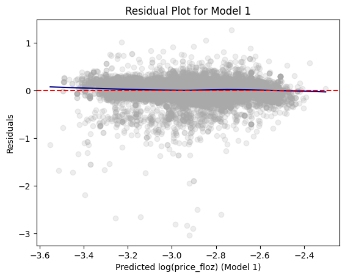
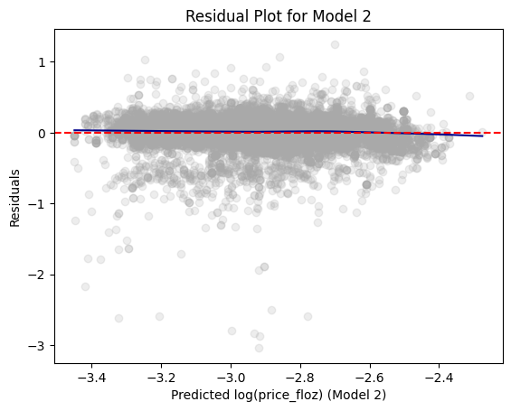
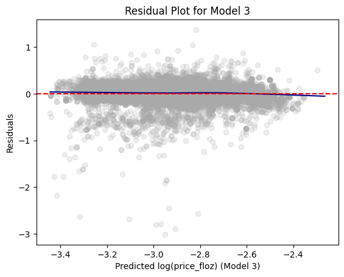

import pandas as pd
from pyspark.sql import SparkSession
from pyspark.sql.functions import rand, col, pow, mean, when, log
from pyspark.ml.feature import VectorAssembler
from pyspark.ml.regression import LinearRegression
Beer Markets | Hw 3 Post
Homework
PySpark
Linear Regression
Importing Modules and Data
spark = SparkSession.builder.master("local[*]").getOrCreate()
beer_markets = pd.read_csv(
'https://bcdanl.github.io/data/beer_markets_all_cleaned.csv'
)
bm = spark.createDataFrame(beer_markets)
bm.show()+---------+--------------------+--------+---------+------------+---------+------------------+--------------------+-----+-------+----------+----------------+---------+--------+--------------+-------------+---+----------+-------+--------------------+------+---------+----------+-------+----------------+-------+
|household| X_purchase_desc|quantity| brand|dollar_spent|beer_floz| price_floz| container|promo| region| state| market|buyertype| income|childrenUnder6|children6to17|age|employment| degree| occupation|ethnic|microwave|dishwasher|tvcable|singlefamilyhome|npeople|
+---------+--------------------+--------+---------+------------+---------+------------------+--------------------+-----+-------+----------+----------------+---------+--------+--------------+-------------+---+----------+-------+--------------------+------+---------+----------+-------+----------------+-------+
| 2000946| BUD LT BR CN 12P| 1|BUD_LIGHT| 8.14| 144.0|0.0565277777777777| CAN|false|CENTRAL| ILLINOIS| RURAL_ILLINOIS| male| 20-60k| false| false|50+| none| Grad|none/retired/student| white| true| true|premium| false| 1|
| 2003036| BUD LT BR CN 24P| 1|BUD_LIGHT| 17.48| 288.0|0.0606944444444444| CAN|false| SOUTH| GEORGIA| ATLANTA| married|100-200k| false| false|50+| full|College|clerical/sales/se...| white| true| true| basic| true| 2|
| 2003036| BUD LT BR CN 24P| 2|BUD_LIGHT| 33.92| 576.0|0.0588888888888888| CAN|false| SOUTH| GEORGIA| ATLANTA| married|100-200k| false| false|50+| full|College|clerical/sales/se...| white| true| true| basic| true| 2|
| 2003036| BUD LT BR CN 30P| 2|BUD_LIGHT| 34.74| 720.0| 0.04825| CAN|false| SOUTH| GEORGIA| ATLANTA| married|100-200k| false| false|50+| full|College|clerical/sales/se...| white| true| true| basic| true| 2|
| 2003036| BUD LT BR CN 36P| 2|BUD_LIGHT| 40.48| 864.0|0.0468518518518518| CAN|false| SOUTH| GEORGIA| ATLANTA| married|100-200k| false| false|50+| full|College|clerical/sales/se...| white| true| true| basic| true| 2|
| 2003036| BUD LT BR CN 36P| 2|BUD_LIGHT| 42.96| 864.0|0.0497222222222222| CAN|false| SOUTH| GEORGIA| ATLANTA| married|100-200k| false| false|50+| full|College|clerical/sales/se...| white| true| true| basic| true| 2|
| 2003036| BUD LT BR CN 36P| 2|BUD_LIGHT| 40.96| 864.0|0.0474074074074074| CAN|false| SOUTH| GEORGIA| ATLANTA| married|100-200k| false| false|50+| full|College|clerical/sales/se...| white| true| true| basic| true| 2|
| 2001521| BUD LT BR CN 6P| 5|BUD_LIGHT| 30.6| 480.0| 0.06375| CAN|false|CENTRAL| INDIANA| RURAL_INDIANA| male| 60-100k| false| false|50+| none|College|none/retired/student| white| true| true| none| false| 1|
| 2001521| BUD LT BR CN 6P| 1|BUD_LIGHT| 9.99| 96.0| 0.1040625| CAN|false|CENTRAL| INDIANA| RURAL_INDIANA| male| 60-100k| false| false|50+| none|College|none/retired/student| white| true| true| none| false| 1|
| 2001521| BUD LT BR CN 6P| 5|BUD_LIGHT| 30.7| 480.0|0.0639583333333333| CAN|false|CENTRAL| INDIANA| RURAL_INDIANA| male| 60-100k| false| false|50+| none|College|none/retired/student| white| true| true| none| false| 1|
| 2001521| BUD LT BR CN 6P| 3|BUD_LIGHT| 18.36| 288.0| 0.06375| CAN|false|CENTRAL| INDIANA| RURAL_INDIANA| male| 60-100k| false| false|50+| none|College|none/retired/student| white| true| true| none| false| 1|
| 2001521| BUD LT BR CN 6P| 5|BUD_LIGHT| 31.05| 480.0| 0.0646875| CAN|false|CENTRAL| INDIANA| RURAL_INDIANA| male| 60-100k| false| false|50+| none|College|none/retired/student| white| true| true| none| false| 1|
| 2001521| BUD LT BR CN 6P| 1|BUD_LIGHT| 9.99| 96.0| 0.1040625| CAN|false|CENTRAL| INDIANA| RURAL_INDIANA| male| 60-100k| false| false|50+| none|College|none/retired/student| white| true| true| none| false| 1|
| 2001978| BUD LT BR CN| 2|BUD_LIGHT| 2.98| 48.0|0.0620833333333333| CAN|false| EAST| NEW YORK| SYRACUSE| married| 60-100k| false| false|50+| part| HS|clerical/sales/se...| white| true| true| none| true| 2|
| 2001978| BUD LT BR CN| 1|BUD_LIGHT| 1.49| 24.0|0.0620833333333333| CAN|false| EAST| NEW YORK| SYRACUSE| married| 60-100k| false| false|50+| part| HS|clerical/sales/se...| white| true| true| none| true| 2|
| 2007716| BUD LT BR NRB LN 6P| 1|BUD_LIGHT| 3.0| 42.0|0.0714285714285714|NON_REFILLABLE_BO...|false| EAST|NEW JERSEY| SURBURBAN_NJ| married| 20-60k| false| false|50+| none| HS|none/retired/student| white| true| true|premium| false| 2|
| 2007716| BUD LT BR NRB LN 6P| 1|BUD_LIGHT| 4.99| 72.0|0.0693055555555555|NON_REFILLABLE_BO...|false| EAST|NEW JERSEY| SURBURBAN_NJ| married| 20-60k| false| false|50+| none| HS|none/retired/student| white| true| true|premium| false| 2|
| 2008311|BUD LT BR NRB LN 12P| 1|BUD_LIGHT| 9.99| 144.0| 0.069375|NON_REFILLABLE_BO...| true| SOUTH| GEORGIA| ATLANTA| married| 60-100k| false| false|50+| full| HS| prof| white| true| true| none| true| 2|
| 2008311|BUD LT BR NRB LN 12P| 1|BUD_LIGHT| 9.49| 144.0|0.0659027777777777|NON_REFILLABLE_BO...| true| SOUTH| GEORGIA| ATLANTA| married| 60-100k| false| false|50+| full| HS| prof| white| true| true| none| true| 2|
| 2010861| BUD LT BR CN 24P| 1|BUD_LIGHT| 15.75| 288.0| 0.0546875| CAN| true| WEST|WASHINGTON|RURAL_WASHINGTON| female| 20-60k| false| false|50+| full| HS|clerical/sales/se...| white| true| true| none| true| 1|
+---------+--------------------+--------+---------+------------+---------+------------------+--------------------+-----+-------+----------+----------------+---------+--------+--------------+-------------+---+----------+-------+--------------------+------+---------+----------+-------+----------------+-------+
only showing top 20 rows
Q1
bm = (
bm
.filter((col("container") == 'CAN') | (col('container') == 'NON_REFILLABLE_BOTTLE'))
)
bm.groupBy('container').count().show()+--------------------+-----+
| container|count|
+--------------------+-----+
|NON_REFILLABLE_BO...|19095|
| CAN|53015|
+--------------------+-----+
Q2
dtrain, dtest = bm.randomSplit([0.67, 0.33], seed = 123)dtrain.describe().show()+-------+--------------------+--------------------+------------------+-------------+------------------+-----------------+--------------------+--------------------+-------+-------+-------------+---------+--------+-----+----------+-------+--------------------+------+-------+------------------+
|summary| household| X_purchase_desc| quantity| brand| dollar_spent| beer_floz| price_floz| container| region| state| market|buyertype| income| age|employment| degree| occupation|ethnic|tvcable| npeople|
+-------+--------------------+--------------------+------------------+-------------+------------------+-----------------+--------------------+--------------------+-------+-------+-------------+---------+--------+-----+----------+-------+--------------------+------+-------+------------------+
| count| 48375| 48375| 48375| 48375| 48375| 48375| 48375| 48375| 48375| 48375| 48375| 48375| 48375|48375| 48375| 48375| 48375| 48375| 48375| 48375|
| mean|1.7360907140465118E7| NULL|1.2943669250645995| NULL|13.761878656329174|266.0919069767442|0.055713475619634495| NULL| NULL| NULL| NULL| NULL| NULL| NULL| NULL| NULL| NULL| NULL| NULL|2.2607670266696056|
| stddev|1.1577801336419007E7| NULL|0.9830520567722059| NULL| 8.602034268942313|197.8108831146448|0.013035874225514712| NULL| NULL| NULL| NULL| NULL| NULL| NULL| NULL| NULL| NULL| NULL| NULL| 0.878472197275354|
| min| 2000235| BUD LT BR CN| 1| BUD_LIGHT|0.5099999999999998| 12.0| 0.0013151041666666| CAN|CENTRAL|ALABAMA| ALBANY| female|100-200k|30-39| full|College|clerical/sales/se...| asian| basic| 1|
| max| 30440718|NATURAL LT BR NRB...| 30|NATURAL_LIGHT| 147.05| 9216.0| 0.1804166666666666|NON_REFILLABLE_BO...| WEST|WYOMING|WASHINGTON_DC| married|under20k| <30| part| none| prof| white|premium| 5plus|
+-------+--------------------+--------------------+------------------+-------------+------------------+-----------------+--------------------+--------------------+-------+-------+-------------+---------+--------+-----+----------+-------+--------------------+------+-------+------------------+
dtest.describe().show()+-------+-------------------+--------------------+------------------+-------------+------------------+------------------+--------------------+--------------------+-------+-------+-------------+---------+--------+-----+----------+-------+--------------------+------+-------+------------------+
|summary| household| X_purchase_desc| quantity| brand| dollar_spent| beer_floz| price_floz| container| region| state| market|buyertype| income| age|employment| degree| occupation|ethnic|tvcable| npeople|
+-------+-------------------+--------------------+------------------+-------------+------------------+------------------+--------------------+--------------------+-------+-------+-------------+---------+--------+-----+----------+-------+--------------------+------+-------+------------------+
| count| 23735| 23735| 23735| 23735| 23735| 23735| 23735| 23735| 23735| 23735| 23735| 23735| 23735|23735| 23735| 23735| 23735| 23735| 23735| 23735|
| mean|1.742943859161576E7| NULL| 1.297872340425532| NULL|13.751384874657832| 264.9700442384664|0.055877105905317276| NULL| NULL| NULL| NULL| NULL| NULL| NULL| NULL| NULL| NULL| NULL| NULL| 2.251360223031611|
| stddev| 1.15966920346623E7| NULL|0.9603244653970454| NULL| 8.536971742556531|188.33659324776673|0.013243025253367981| NULL| NULL| NULL| NULL| NULL| NULL| NULL| NULL| NULL| NULL| NULL| NULL|0.8727081906286585|
| min| 2000417| BUD LT BR CN| 1| BUD_LIGHT|0.5600000000000005| 12.0| 0.0025925925925925| CAN|CENTRAL|ALABAMA| ALBANY| female|100-200k|30-39| full|College|clerical/sales/se...| asian| basic| 1|
| max| 30440718|NATURAL LT BR NRB...| 30|NATURAL_LIGHT| 159.13| 4608.0| 0.2340625|NON_REFILLABLE_BO...| WEST|WYOMING|WASHINGTON_DC| married|under20k| <30| part| none| prof| white|premium| 5plus|
+-------+-------------------+--------------------+------------------+-------------+------------------+------------------+--------------------+--------------------+-------+-------+-------------+---------+--------+-----+----------+-------+--------------------+------+-------+------------------+
Q3 - 8
Q3
- Model 1
Uses as features: market, brand, container, and log(beer_floz)
market, brand, and container are one-hot encoded with
BUFFALO-ROCHESTER,BUD_LIGHT, andNON_REFILLABLE_BOTTLEas respective reference levels
- Model 2
- Uses the same features as model 1, but with interaction terms between
brandandlog(beer_floz)
- Uses the same features as model 1, but with interaction terms between
- Model 3
- Same features as model 2, but with interaction terms between
brandandpromo,promoandlog(beer_floz),and a tertiary interaction term betweenbrand,promo, andlog(beer_floz)
- Same features as model 2, but with interaction terms between
Q4
def add_dummy_variables(var_name, reference_level, category_order=None):
"""
Creates dummy variables for the specified column in the global DataFrames dtrain and dtest.
Allows manual setting of category order.
Parameters:
var_name (str): The name of the categorical column (e.g., "borough_name").
reference_level (int): Index of the category to be used as the reference (dummy omitted).
category_order (list, optional): List of categories in the desired order. If None, categories are sorted.
Returns:
dummy_cols (list): List of dummy column names excluding the reference category.
ref_category (str): The category chosen as the reference.
"""
global dtrain, dtest
# Get distinct categories from the training set.
categories = dtrain.select(var_name).distinct().rdd.flatMap(lambda x: x).collect()
# Convert booleans to strings if present.
categories = [str(c) if isinstance(c, bool) else c for c in categories]
# Use manual category order if provided; otherwise, sort categories.
if category_order:
# Ensure all categories are present in the user-defined order
missing = set(categories) - set(category_order)
if missing:
raise ValueError(f"These categories are missing from your custom order: {missing}")
categories = category_order
else:
categories = sorted(categories)
# Validate reference_level
if reference_level < 0 or reference_level >= len(categories):
raise ValueError(f"reference_level must be between 0 and {len(categories) - 1}")
# Define the reference category
ref_category = categories[reference_level]
print("Reference category (dummy omitted):", ref_category)
# Create dummy variables for all categories
for cat in categories:
dummy_col_name = var_name + "_" + str(cat).replace(" ", "_")
dtrain = dtrain.withColumn(dummy_col_name, when(col(var_name) == cat, 1).otherwise(0))
dtest = dtest.withColumn(dummy_col_name, when(col(var_name) == cat, 1).otherwise(0))
# List of dummy columns, excluding the reference category
dummy_cols = [var_name + "_" + str(cat).replace(" ", "_") for cat in categories if cat != ref_category]
return dummy_cols, ref_category
import numpy as np
import scipy.stats as stats
from tabulate import tabulate
def regression_table(model, assembler):
"""
Creates a formatted regression table from a fitted LinearRegression model and its VectorAssembler,
and inserts a dashed horizontal line after the Intercept row. The table includes separate columns
for the 95% confidence interval lower and upper bounds for each coefficient (computed at the 5% significance level)
and an "Observations" row (using model.summary.numInstances) above the R² row.
The RMSE row is placed as the last row.
The columns are ordered as:
Metric | Value | Significance | Std. Error | p-value | 95% CI Lower | 95% CI Upper
For the "Value", "Std. Error", "95% CI Lower", and "95% CI Upper" columns, commas are inserted every three digits,
with 3 decimal places (except for Observations which is formatted as an integer with commas).
Parameters:
model: A fitted LinearRegression model (with a .summary attribute).
assembler: The VectorAssembler used to assemble the features for the model.
Returns:
A formatted string containing the regression table.
"""
# Extract coefficients and standard errors as NumPy arrays
coeffs = model.coefficients.toArray()
std_errors_all = np.array(model.summary.coefficientStandardErrors)
# Check if the intercept's standard error is included (one extra element)
if len(std_errors_all) == len(coeffs) + 1:
intercept_se = std_errors_all[0]
std_errors = std_errors_all[1:]
else:
intercept_se = None
std_errors = std_errors_all
# Compute t-statistics for feature coefficients (t = beta / SE(beta))
# t_stats = coeffs / std_errors
t_stats = model.summary.tValues
# Degrees of freedom: number of instances minus number of predictors minus 1 (for intercept)
df = model.summary.numInstances - len(coeffs) - 1
# Compute the t-critical value for a 95% confidence interval (two-tailed, 5% significance)
t_critical = stats.t.ppf(0.975, df)
# Compute two-tailed p-values for each feature coefficient
# p_values = [2 * (1 - stats.t.cdf(np.abs(t), df)) for t in t_stats]
p_values = model.summary.pValues
# Function to assign significance stars based on p-value
def significance_stars(p):
if p < 0.01:
return "***"
elif p < 0.05:
return "**"
elif p < 0.1:
return "*"
else:
return ""
# Build the table rows.
# Order: Metric, Value, Significance, Std. Error, p-value, 95% CI Lower, 95% CI Upper.
table = []
for feature, beta, se, p in zip(assembler.getInputCols(), coeffs, std_errors, p_values):
ci_lower = beta - t_critical * se
ci_upper = beta + t_critical * se
table.append([
"Beta: " + feature, # Metric name
beta, # Beta estimate (Value)
significance_stars(p), # Significance stars
se, # Standard error
p, # p-value
ci_lower, # 95% CI lower bound
ci_upper # 95% CI upper bound
])
# Compute and add the intercept row with its SE, p-value, significance, and CI (if available)
if intercept_se is not None:
intercept_t = model.intercept / intercept_se
intercept_p = 2 * (1 - stats.t.cdf(np.abs(intercept_t), df))
intercept_sig = significance_stars(intercept_p)
ci_intercept_lower = model.intercept - t_critical * intercept_se
ci_intercept_upper = model.intercept + t_critical * intercept_se
else:
intercept_se = ""
intercept_p = ""
intercept_sig = ""
ci_intercept_lower = ""
ci_intercept_upper = ""
table.append([
"Intercept",
model.intercept,
intercept_sig,
intercept_se,
intercept_p,
ci_intercept_lower,
ci_intercept_upper
])
# Append overall model metrics:
# Insert an Observations row using model.summary.numInstances,
# then an R² row, and finally the RMSE row as the last row.
table.append(["Observations", model.summary.numInstances, "", "", "", "", ""])
table.append(["R²", model.summary.r2, "", "", "", "", ""])
table.append(["RMSE", model.summary.rootMeanSquaredError, "", "", "", "", ""])
# Format the table.
# For the "Value" (index 1), "Std. Error" (index 3), "95% CI Lower" (index 5), and "95% CI Upper" (index 6) columns,
# format with commas and 3 decimal places, except for Observations which should be an integer with commas.
# For the p-value (index 4), format to 3 decimal places.
formatted_table = []
for row in table:
formatted_row = []
for i, item in enumerate(row):
if row[0] == "Observations" and i == 1 and isinstance(item, (int, float, np.floating)) and item != "":
# Format Observations as integer with commas, no decimals.
formatted_row.append(f"{int(item):,}")
elif isinstance(item, (int, float, np.floating)) and item != "":
if i in [1, 3, 5, 6]:
formatted_row.append(f"{item:,.3f}")
elif i == 4:
formatted_row.append(f"{item:.3f}")
else:
formatted_row.append(f"{item:.3f}")
else:
formatted_row.append(item)
formatted_table.append(formatted_row)
# Generate the table string using tabulate.
table_str = tabulate(
formatted_table,
headers=["Metric", "Value", "Sig.", "Std. Error", "p-value", "95% CI Lower", "95% CI Upper"],
tablefmt="pretty",
colalign=("left", "right", "center", "right", "right", "right", "right")
)
# Insert a dashed line after the Intercept row for clarity.
lines = table_str.split("\n")
dash_line = '-' * len(lines[0])
for i, line in enumerate(lines):
if "Intercept" in line and not line.strip().startswith('+'):
lines.insert(i+1, dash_line)
break
return "\n".join(lines)
Model 1
- market (dummys), brand (dummys), container (CAN not as ref lev), log(beer_floz)
dtrain = dtrain.withColumn('log_floz', log('beer_floz'))
dtrain = dtrain.withColumn('log_price_floz', log('price_floz'))
dtest = dtest.withColumn('log_floz', log('beer_floz'))
dtest = dtest.withColumn('log_price_floz', log('price_floz'))
dtest.orderBy('market', 'brand')
dtrain.orderBy('market', 'brand')DataFrame[household: bigint, X_purchase_desc: string, quantity: bigint, brand: string, dollar_spent: double, beer_floz: double, price_floz: double, container: string, promo: boolean, region: string, state: string, market: string, buyertype: string, income: string, childrenUnder6: boolean, children6to17: boolean, age: string, employment: string, degree: string, occupation: string, ethnic: string, microwave: boolean, dishwasher: boolean, tvcable: string, singlefamilyhome: boolean, npeople: string, log_floz: double, log_price_floz: double, market_ALBANY: int, market_ATLANTA: int, market_BALTIMORE: int, market_BIRMINGHAM: int, market_BOSTON: int, market_BUFFALO-ROCHESTER: int, market_CHARLOTTE: int, market_CHICAGO: int, market_CINCINNATI: int, market_CLEVELAND: int, market_COLUMBUS: int, market_DALLAS: int, market_DENVER: int, market_DES_MOINES: int, market_DETROIT: int, market_EXURBAN_NJ: int, market_EXURBAN_NY: int, market_GRAND_RAPIDS: int, market_HARTFORD-NEW_HAVEN: int, market_HOUSTON: int, market_INDIANAPOLIS: int, market_JACKSONVILLE: int, market_KANSAS_CITY: int, market_LITTLE_ROCK: int, market_LOS_ANGELES: int, market_LOUISVILLE: int, market_MEMPHIS: int, market_MIAMI: int, market_MILWAUKEE: int, market_MINNEAPOLIS: int, market_NASHVILLE: int, market_NEW_ORLEANS-MOBILE: int, market_OKLAHOMA_CITY-TULSA: int, market_OMAHA: int, market_ORLANDO: int, market_PHILADELPHIA: int, market_PHOENIX: int, market_PITTSBURGH: int, market_PORTLAND: int, market_RALEIGH-DURHAM: int, market_RICHMOND: int, market_RURAL_ALABAMA: int, market_RURAL_ARKANSAS: int, market_RURAL_CALIFORNIA: int, market_RURAL_COLORADO: int, market_RURAL_FLORIDA: int, market_RURAL_GEORGIA: int, market_RURAL_IDAHO: int, market_RURAL_ILLINOIS: int, market_RURAL_INDIANA: int, market_RURAL_IOWA: int, market_RURAL_KANSAS: int, market_RURAL_KENTUCKY: int, market_RURAL_LOUISIANA: int, market_RURAL_MAINE: int, market_RURAL_MICHIGAN: int, market_RURAL_MINNESOTA: int, market_RURAL_MISSISSIPPI: int, market_RURAL_MISSOURI: int, market_RURAL_MONTANA: int, market_RURAL_NEBRASKA: int, market_RURAL_NEVADA: int, market_RURAL_NEW_HAMPSHIRE: int, market_RURAL_NEW_MEXICO: int, market_RURAL_NEW_YORK: int, market_RURAL_NORTH_CAROLINA: int, market_RURAL_NORTH_DAKOTA: int, market_RURAL_OHIO: int, market_RURAL_OKLAHOMA: int, market_RURAL_OREGON: int, market_RURAL_PENNSYLVANIA: int, market_RURAL_SOUTH_CAROLINA: int, market_RURAL_SOUTH_DAKOTA: int, market_RURAL_TENNESSEE: int, market_RURAL_TEXAS: int, market_RURAL_VERMONT: int, market_RURAL_VIRGINIA: int, market_RURAL_WASHINGTON: int, market_RURAL_WEST_VIRGINIA: int, market_RURAL_WISCONSIN: int, market_RURAL_WYOMING: int, market_SACRAMENTO: int, market_SALT_LAKE_CITY: int, market_SAN_ANTONIO: int, market_SAN_DIEGO: int, market_SAN_FRANCISCO: int, market_SEATTLE: int, market_ST_LOUIS: int, market_SURBURBAN_NJ: int, market_SURBURBAN_NY: int, market_SYRACUSE: int, market_TAMPA: int, market_URBAN_NY: int, market_WASHINGTON_DC: int, brand_BUD_LIGHT: int, brand_BUSCH_LIGHT: int, brand_COORS_LIGHT: int, brand_MILLER_LITE: int, brand_NATURAL_LIGHT: int, container_CAN: int, container_NON_REFILLABLE_BOTTLE: int]market_dummys, market_reflev = add_dummy_variables('market', reference_level=5)
brand_dummys, brand_reflev = add_dummy_variables('brand', reference_level=0)
container_dummys, container_reflev = add_dummy_variables('container', reference_level=1)
cont = ['log_floz']
features_1 = market_dummys + brand_dummys + container_dummys + contReference category (dummy omitted): BUFFALO-ROCHESTER
Reference category (dummy omitted): BUD_LIGHT
Reference category (dummy omitted): NON_REFILLABLE_BOTTLEassembler1 = VectorAssembler(
inputCols = features_1,
outputCol='features')
dtrain1 = assembler1.transform(dtrain)
dtest1 = assembler1.transform(dtest)
model1 = LinearRegression(
featuresCol='features',
labelCol='log_price_floz'
).fit(dtrain1)
dtest1 = model1.transform(dtest1)
print(regression_table(model1, assembler1))+-----------------------------------+--------+------+------------+---------+--------------+--------------+
| Metric | Value | Sig. | Std. Error | p-value | 95% CI Lower | 95% CI Upper |
+-----------------------------------+--------+------+------------+---------+--------------+--------------+
| Beta: market_ALBANY | 0.031 | ** | 0.010 | 0.013 | 0.011 | 0.051 |
| Beta: market_ATLANTA | 0.095 | *** | 0.014 | 0.000 | 0.068 | 0.122 |
| Beta: market_BALTIMORE | 0.099 | *** | 0.010 | 0.000 | 0.079 | 0.119 |
| Beta: market_BIRMINGHAM | 0.128 | *** | 0.011 | 0.000 | 0.107 | 0.149 |
| Beta: market_BOSTON | 0.129 | *** | 0.010 | 0.000 | 0.109 | 0.149 |
| Beta: market_CHARLOTTE | 0.033 | *** | 0.010 | 0.001 | 0.014 | 0.052 |
| Beta: market_CHICAGO | -0.003 | | 0.010 | 0.775 | -0.023 | 0.017 |
| Beta: market_CINCINNATI | 0.088 | *** | 0.010 | 0.000 | 0.068 | 0.108 |
| Beta: market_CLEVELAND | 0.070 | *** | 0.010 | 0.000 | 0.051 | 0.089 |
| Beta: market_COLUMBUS | 0.077 | *** | 0.010 | 0.000 | 0.058 | 0.096 |
| Beta: market_DALLAS | 0.210 | *** | 0.011 | 0.000 | 0.188 | 0.232 |
| Beta: market_DENVER | 0.124 | *** | 0.011 | 0.000 | 0.101 | 0.147 |
| Beta: market_DES_MOINES | 0.141 | *** | 0.010 | 0.000 | 0.122 | 0.160 |
| Beta: market_DETROIT | 0.096 | *** | 0.016 | 0.000 | 0.065 | 0.127 |
| Beta: market_EXURBAN_NJ | 0.224 | *** | 0.021 | 0.000 | 0.182 | 0.265 |
| Beta: market_EXURBAN_NY | 0.137 | *** | 0.011 | 0.000 | 0.115 | 0.159 |
| Beta: market_GRAND_RAPIDS | 0.087 | *** | 0.014 | 0.000 | 0.061 | 0.114 |
| Beta: market_HARTFORD-NEW_HAVEN | 0.150 | *** | 0.010 | 0.000 | 0.131 | 0.169 |
| Beta: market_HOUSTON | 0.122 | *** | 0.010 | 0.000 | 0.102 | 0.142 |
| Beta: market_INDIANAPOLIS | 0.052 | *** | 0.012 | 0.000 | 0.028 | 0.076 |
| Beta: market_JACKSONVILLE | 0.128 | *** | 0.012 | 0.000 | 0.106 | 0.151 |
| Beta: market_KANSAS_CITY | 0.083 | *** | 0.013 | 0.000 | 0.058 | 0.109 |
| Beta: market_LITTLE_ROCK | 0.108 | *** | 0.010 | 0.000 | 0.089 | 0.127 |
| Beta: market_LOS_ANGELES | 0.033 | *** | 0.011 | 0.001 | 0.011 | 0.055 |
| Beta: market_LOUISVILLE | 0.070 | *** | 0.012 | 0.000 | 0.046 | 0.094 |
| Beta: market_MEMPHIS | 0.129 | *** | 0.009 | 0.000 | 0.111 | 0.147 |
| Beta: market_MIAMI | 0.115 | *** | 0.011 | 0.000 | 0.093 | 0.137 |
| Beta: market_MILWAUKEE | 0.039 | *** | 0.011 | 0.001 | 0.017 | 0.061 |
| Beta: market_MINNEAPOLIS | 0.135 | *** | 0.011 | 0.000 | 0.114 | 0.156 |
| Beta: market_NASHVILLE | 0.147 | *** | 0.011 | 0.000 | 0.126 | 0.169 |
| Beta: market_NEW_ORLEANS-MOBILE | 0.137 | *** | 0.011 | 0.000 | 0.115 | 0.159 |
| Beta: market_OKLAHOMA_CITY-TULSA | 0.150 | *** | 0.011 | 0.000 | 0.129 | 0.171 |
| Beta: market_OMAHA | 0.130 | *** | 0.010 | 0.000 | 0.109 | 0.150 |
| Beta: market_ORLANDO | 0.108 | *** | 0.013 | 0.000 | 0.083 | 0.134 |
| Beta: market_PHILADELPHIA | 0.124 | *** | 0.009 | 0.000 | 0.106 | 0.143 |
| Beta: market_PHOENIX | 0.145 | *** | 0.014 | 0.000 | 0.118 | 0.173 |
| Beta: market_PITTSBURGH | 0.099 | *** | 0.012 | 0.000 | 0.076 | 0.123 |
| Beta: market_PORTLAND | 0.109 | *** | 0.010 | 0.000 | 0.089 | 0.130 |
| Beta: market_RALEIGH-DURHAM | 0.087 | *** | 0.011 | 0.000 | 0.066 | 0.107 |
| Beta: market_RICHMOND | 0.044 | *** | 0.014 | 0.000 | 0.016 | 0.072 |
| Beta: market_RURAL_ALABAMA | 0.164 | *** | 0.018 | 0.000 | 0.128 | 0.200 |
| Beta: market_RURAL_ARKANSAS | 0.189 | *** | 0.011 | 0.000 | 0.167 | 0.210 |
| Beta: market_RURAL_CALIFORNIA | 0.048 | *** | 0.047 | 0.000 | -0.045 | 0.140 |
| Beta: market_RURAL_COLORADO | 0.199 | *** | 0.012 | 0.000 | 0.175 | 0.223 |
| Beta: market_RURAL_FLORIDA | 0.070 | *** | 0.013 | 0.000 | 0.045 | 0.095 |
| Beta: market_RURAL_GEORGIA | 0.138 | *** | 0.019 | 0.000 | 0.101 | 0.175 |
| Beta: market_RURAL_IDAHO | 0.146 | *** | 0.010 | 0.000 | 0.126 | 0.166 |
| Beta: market_RURAL_ILLINOIS | 0.018 | * | 0.013 | 0.073 | -0.006 | 0.043 |
| Beta: market_RURAL_INDIANA | 0.070 | *** | 0.011 | 0.000 | 0.049 | 0.091 |
| Beta: market_RURAL_IOWA | 0.061 | *** | 0.018 | 0.000 | 0.025 | 0.096 |
| Beta: market_RURAL_KANSAS | 0.140 | *** | 0.017 | 0.000 | 0.108 | 0.173 |
| Beta: market_RURAL_KENTUCKY | 0.152 | *** | 0.013 | 0.000 | 0.126 | 0.178 |
| Beta: market_RURAL_LOUISIANA | 0.079 | *** | 0.014 | 0.000 | 0.052 | 0.106 |
| Beta: market_RURAL_MAINE | 0.090 | *** | 0.011 | 0.000 | 0.068 | 0.112 |
| Beta: market_RURAL_MICHIGAN | 0.089 | *** | 0.019 | 0.000 | 0.051 | 0.126 |
| Beta: market_RURAL_MINNESOTA | 0.176 | *** | 0.014 | 0.000 | 0.149 | 0.203 |
| Beta: market_RURAL_MISSISSIPPI | 0.053 | *** | 0.012 | 0.000 | 0.030 | 0.076 |
| Beta: market_RURAL_MISSOURI | 0.110 | *** | 0.014 | 0.000 | 0.084 | 0.137 |
| Beta: market_RURAL_MONTANA | 0.130 | *** | 0.022 | 0.000 | 0.087 | 0.172 |
| Beta: market_RURAL_NEBRASKA | 0.148 | *** | 0.012 | 0.000 | 0.125 | 0.172 |
| Beta: market_RURAL_NEVADA | 0.046 | *** | 0.040 | 0.000 | -0.033 | 0.126 |
| Beta: market_RURAL_NEW_HAMPSHIRE | 0.070 | * | 0.013 | 0.085 | 0.044 | 0.096 |
| Beta: market_RURAL_NEW_MEXICO | 0.168 | *** | 0.064 | 0.000 | 0.042 | 0.293 |
| Beta: market_RURAL_NEW_YORK | -0.007 | | 0.011 | 0.919 | -0.028 | 0.015 |
| Beta: market_RURAL_NORTH_CAROLINA | 0.027 | ** | 0.020 | 0.016 | -0.012 | 0.065 |
| Beta: market_RURAL_NORTH_DAKOTA | 0.245 | *** | 0.016 | 0.000 | 0.214 | 0.276 |
| Beta: market_RURAL_OHIO | 0.095 | *** | 0.029 | 0.000 | 0.038 | 0.151 |
| Beta: market_RURAL_OKLAHOMA | 0.158 | *** | 0.037 | 0.000 | 0.086 | 0.230 |
| Beta: market_RURAL_OREGON | 0.007 | | 0.014 | 0.853 | -0.022 | 0.035 |
| Beta: market_RURAL_PENNSYLVANIA | 0.136 | *** | 0.010 | 0.000 | 0.116 | 0.156 |
| Beta: market_RURAL_SOUTH_CAROLINA | 0.057 | *** | 0.019 | 0.000 | 0.020 | 0.093 |
| Beta: market_RURAL_SOUTH_DAKOTA | 0.085 | *** | 0.013 | 0.000 | 0.060 | 0.111 |
| Beta: market_RURAL_TENNESSEE | 0.175 | *** | 0.010 | 0.000 | 0.156 | 0.195 |
| Beta: market_RURAL_TEXAS | 0.178 | *** | 0.020 | 0.000 | 0.139 | 0.216 |
| Beta: market_RURAL_VERMONT | 0.090 | *** | 0.017 | 0.000 | 0.057 | 0.124 |
| Beta: market_RURAL_VIRGINIA | 0.017 | | 0.014 | 0.315 | -0.010 | 0.045 |
| Beta: market_RURAL_WASHINGTON | 0.100 | *** | 0.015 | 0.000 | 0.071 | 0.130 |
| Beta: market_RURAL_WEST_VIRGINIA | -0.033 | ** | 0.010 | 0.030 | -0.053 | -0.013 |
| Beta: market_RURAL_WISCONSIN | 0.049 | *** | 0.033 | 0.000 | -0.016 | 0.115 |
| Beta: market_RURAL_WYOMING | 0.153 | *** | 0.011 | 0.000 | 0.132 | 0.174 |
| Beta: market_SACRAMENTO | 0.032 | *** | 0.014 | 0.003 | 0.004 | 0.060 |
| Beta: market_SALT_LAKE_CITY | 0.120 | *** | 0.009 | 0.000 | 0.101 | 0.138 |
| Beta: market_SAN_ANTONIO | 0.146 | *** | 0.012 | 0.000 | 0.123 | 0.168 |
| Beta: market_SAN_DIEGO | 0.018 | | 0.011 | 0.114 | -0.003 | 0.040 |
| Beta: market_SAN_FRANCISCO | 0.080 | *** | 0.011 | 0.000 | 0.058 | 0.101 |
| Beta: market_SEATTLE | 0.114 | *** | 0.010 | 0.000 | 0.094 | 0.134 |
| Beta: market_ST_LOUIS | 0.042 | *** | 0.013 | 0.000 | 0.017 | 0.068 |
| Beta: market_SURBURBAN_NJ | -0.018 | | 0.013 | 0.168 | -0.043 | 0.007 |
| Beta: market_SURBURBAN_NY | 0.107 | *** | 0.014 | 0.000 | 0.079 | 0.135 |
| Beta: market_SYRACUSE | -0.032 | ** | 0.009 | 0.026 | -0.050 | -0.014 |
| Beta: market_TAMPA | 0.112 | *** | 0.011 | 0.000 | 0.090 | 0.134 |
| Beta: market_URBAN_NY | 0.172 | *** | 0.011 | 0.000 | 0.151 | 0.194 |
| Beta: market_WASHINGTON_DC | 0.108 | *** | 0.003 | 0.000 | 0.102 | 0.113 |
| Beta: brand_BUSCH_LIGHT | -0.260 | *** | 0.002 | 0.000 | -0.264 | -0.255 |
| Beta: brand_COORS_LIGHT | -0.002 | | 0.002 | 0.408 | -0.006 | 0.002 |
| Beta: brand_MILLER_LITE | -0.013 | *** | 0.002 | 0.000 | -0.018 | -0.008 |
| Beta: brand_NATURAL_LIGHT | -0.318 | *** | 0.002 | 0.000 | -0.322 | -0.314 |
| Beta: container_CAN | -0.052 | *** | 0.001 | 0.000 | -0.054 | -0.050 |
| Beta: log_floz | -0.142 | *** | 0.011 | 0.000 | -0.163 | -0.121 |
| Intercept | -2.123 | *** | 0.012 | 0.000 | -2.147 | -2.098 |
----------------------------------------------------------------------------------------------------------
| Observations | 48,375 | | | | | |
| R² | 0.553 | | | | | |
| RMSE | 0.168 | | | | | |
+-----------------------------------+--------+------+------------+---------+--------------+--------------+Model 2
dtrain, dtest = bm.randomSplit([0.67, 0.33], seed = 123)dtrain = dtrain.withColumn('log_floz', log('beer_floz'))
dtrain = dtrain.withColumn('log_price_floz', log('price_floz'))
dtest = dtest.withColumn('log_floz', log('beer_floz'))
dtest = dtest.withColumn('log_price_floz', log('price_floz'))
dtrain.orderBy('market', 'brand')
dtest.orderBy('market', 'brand')
market_dummys, market_reflev = add_dummy_variables('market', reference_level=5)
brand_dummys, brand_reflev = add_dummy_variables('brand', reference_level=0)
container_dummys, container_reflev = add_dummy_variables('container', reference_level=1)
cont = ['log_floz']
features_2 = market_dummys + brand_dummys + container_dummys + contReference category (dummy omitted): BUFFALO-ROCHESTER
Reference category (dummy omitted): BUD_LIGHT
Reference category (dummy omitted): NON_REFILLABLE_BOTTLEfor i in brand_dummys:
dtrain = dtrain.withColumn(f"{i}_log_floz", col(i) * col('log_floz'))
dtest = dtest.withColumn(f"{i}_log_floz", col(i) * col('log_floz'))
features_2.append(f"{i}_log_floz")assembler2 = VectorAssembler(
inputCols = features_2,
outputCol='features')
dtrain2 = assembler2.transform(dtrain)
dtest2 = assembler2.transform(dtest)
model2 = LinearRegression(
featuresCol='features',
labelCol='log_price_floz'
).fit(dtrain2)
dtest2 = model2.transform(dtest2)
print(regression_table(model2, assembler2))+------------------------------------+--------+------+------------+---------+--------------+--------------+
| Metric | Value | Sig. | Std. Error | p-value | 95% CI Lower | 95% CI Upper |
+------------------------------------+--------+------+------------+---------+--------------+--------------+
| Beta: market_ALBANY | 0.033 | *** | 0.010 | 0.008 | 0.013 | 0.053 |
| Beta: market_ATLANTA | 0.094 | *** | 0.014 | 0.000 | 0.067 | 0.120 |
| Beta: market_BALTIMORE | 0.101 | *** | 0.010 | 0.000 | 0.081 | 0.122 |
| Beta: market_BIRMINGHAM | 0.134 | *** | 0.011 | 0.000 | 0.113 | 0.155 |
| Beta: market_BOSTON | 0.128 | *** | 0.010 | 0.000 | 0.108 | 0.148 |
| Beta: market_CHARLOTTE | 0.029 | *** | 0.010 | 0.005 | 0.010 | 0.048 |
| Beta: market_CHICAGO | -0.008 | | 0.010 | 0.407 | -0.028 | 0.012 |
| Beta: market_CINCINNATI | 0.083 | *** | 0.010 | 0.000 | 0.063 | 0.103 |
| Beta: market_CLEVELAND | 0.065 | *** | 0.010 | 0.000 | 0.046 | 0.084 |
| Beta: market_COLUMBUS | 0.074 | *** | 0.010 | 0.000 | 0.055 | 0.093 |
| Beta: market_DALLAS | 0.219 | *** | 0.011 | 0.000 | 0.197 | 0.241 |
| Beta: market_DENVER | 0.122 | *** | 0.011 | 0.000 | 0.100 | 0.145 |
| Beta: market_DES_MOINES | 0.139 | *** | 0.010 | 0.000 | 0.120 | 0.158 |
| Beta: market_DETROIT | 0.091 | *** | 0.016 | 0.000 | 0.060 | 0.122 |
| Beta: market_EXURBAN_NJ | 0.218 | *** | 0.021 | 0.000 | 0.177 | 0.259 |
| Beta: market_EXURBAN_NY | 0.134 | *** | 0.011 | 0.000 | 0.112 | 0.156 |
| Beta: market_GRAND_RAPIDS | 0.083 | *** | 0.014 | 0.000 | 0.056 | 0.109 |
| Beta: market_HARTFORD-NEW_HAVEN | 0.147 | *** | 0.010 | 0.000 | 0.128 | 0.166 |
| Beta: market_HOUSTON | 0.119 | *** | 0.010 | 0.000 | 0.099 | 0.139 |
| Beta: market_INDIANAPOLIS | 0.050 | *** | 0.012 | 0.000 | 0.026 | 0.074 |
| Beta: market_JACKSONVILLE | 0.123 | *** | 0.012 | 0.000 | 0.100 | 0.145 |
| Beta: market_KANSAS_CITY | 0.079 | *** | 0.013 | 0.000 | 0.054 | 0.104 |
| Beta: market_LITTLE_ROCK | 0.104 | *** | 0.010 | 0.000 | 0.085 | 0.123 |
| Beta: market_LOS_ANGELES | 0.026 | *** | 0.011 | 0.009 | 0.004 | 0.047 |
| Beta: market_LOUISVILLE | 0.065 | *** | 0.012 | 0.000 | 0.041 | 0.088 |
| Beta: market_MEMPHIS | 0.128 | *** | 0.009 | 0.000 | 0.109 | 0.146 |
| Beta: market_MIAMI | 0.114 | *** | 0.011 | 0.000 | 0.091 | 0.136 |
| Beta: market_MILWAUKEE | 0.038 | *** | 0.011 | 0.001 | 0.016 | 0.060 |
| Beta: market_MINNEAPOLIS | 0.135 | *** | 0.011 | 0.000 | 0.115 | 0.156 |
| Beta: market_NASHVILLE | 0.145 | *** | 0.011 | 0.000 | 0.124 | 0.167 |
| Beta: market_NEW_ORLEANS-MOBILE | 0.127 | *** | 0.011 | 0.000 | 0.105 | 0.149 |
| Beta: market_OKLAHOMA_CITY-TULSA | 0.147 | *** | 0.011 | 0.000 | 0.126 | 0.168 |
| Beta: market_OMAHA | 0.127 | *** | 0.010 | 0.000 | 0.106 | 0.147 |
| Beta: market_ORLANDO | 0.107 | *** | 0.013 | 0.000 | 0.081 | 0.132 |
| Beta: market_PHILADELPHIA | 0.124 | *** | 0.009 | 0.000 | 0.106 | 0.142 |
| Beta: market_PHOENIX | 0.148 | *** | 0.014 | 0.000 | 0.121 | 0.175 |
| Beta: market_PITTSBURGH | 0.098 | *** | 0.012 | 0.000 | 0.074 | 0.121 |
| Beta: market_PORTLAND | 0.107 | *** | 0.010 | 0.000 | 0.086 | 0.127 |
| Beta: market_RALEIGH-DURHAM | 0.087 | *** | 0.011 | 0.000 | 0.066 | 0.107 |
| Beta: market_RICHMOND | 0.041 | *** | 0.014 | 0.000 | 0.013 | 0.069 |
| Beta: market_RURAL_ALABAMA | 0.164 | *** | 0.018 | 0.000 | 0.128 | 0.200 |
| Beta: market_RURAL_ARKANSAS | 0.191 | *** | 0.011 | 0.000 | 0.169 | 0.212 |
| Beta: market_RURAL_CALIFORNIA | 0.044 | *** | 0.047 | 0.000 | -0.048 | 0.136 |
| Beta: market_RURAL_COLORADO | 0.195 | *** | 0.012 | 0.000 | 0.171 | 0.219 |
| Beta: market_RURAL_FLORIDA | 0.061 | *** | 0.013 | 0.000 | 0.036 | 0.086 |
| Beta: market_RURAL_GEORGIA | 0.133 | *** | 0.019 | 0.000 | 0.097 | 0.170 |
| Beta: market_RURAL_IDAHO | 0.139 | *** | 0.010 | 0.000 | 0.119 | 0.159 |
| Beta: market_RURAL_ILLINOIS | 0.017 | | 0.013 | 0.106 | -0.008 | 0.041 |
| Beta: market_RURAL_INDIANA | 0.071 | *** | 0.010 | 0.000 | 0.050 | 0.091 |
| Beta: market_RURAL_IOWA | 0.057 | *** | 0.018 | 0.000 | 0.021 | 0.092 |
| Beta: market_RURAL_KANSAS | 0.141 | *** | 0.016 | 0.000 | 0.109 | 0.173 |
| Beta: market_RURAL_KENTUCKY | 0.151 | *** | 0.013 | 0.000 | 0.125 | 0.177 |
| Beta: market_RURAL_LOUISIANA | 0.073 | *** | 0.014 | 0.000 | 0.046 | 0.100 |
| Beta: market_RURAL_MAINE | 0.087 | *** | 0.011 | 0.000 | 0.064 | 0.109 |
| Beta: market_RURAL_MICHIGAN | 0.085 | *** | 0.019 | 0.000 | 0.048 | 0.123 |
| Beta: market_RURAL_MINNESOTA | 0.177 | *** | 0.014 | 0.000 | 0.150 | 0.204 |
| Beta: market_RURAL_MISSISSIPPI | 0.048 | *** | 0.012 | 0.001 | 0.025 | 0.071 |
| Beta: market_RURAL_MISSOURI | 0.109 | *** | 0.013 | 0.000 | 0.083 | 0.135 |
| Beta: market_RURAL_MONTANA | 0.126 | *** | 0.021 | 0.000 | 0.084 | 0.168 |
| Beta: market_RURAL_NEBRASKA | 0.147 | *** | 0.012 | 0.000 | 0.124 | 0.171 |
| Beta: market_RURAL_NEVADA | 0.046 | *** | 0.040 | 0.000 | -0.033 | 0.125 |
| Beta: market_RURAL_NEW_HAMPSHIRE | 0.054 | | 0.013 | 0.177 | 0.028 | 0.080 |
| Beta: market_RURAL_NEW_MEXICO | 0.163 | *** | 0.064 | 0.000 | 0.038 | 0.287 |
| Beta: market_RURAL_NEW_YORK | -0.007 | | 0.011 | 0.914 | -0.029 | 0.015 |
| Beta: market_RURAL_NORTH_CAROLINA | 0.056 | *** | 0.020 | 0.000 | 0.017 | 0.094 |
| Beta: market_RURAL_NORTH_DAKOTA | 0.243 | *** | 0.016 | 0.000 | 0.213 | 0.274 |
| Beta: market_RURAL_OHIO | 0.093 | *** | 0.029 | 0.000 | 0.036 | 0.149 |
| Beta: market_RURAL_OKLAHOMA | 0.158 | *** | 0.037 | 0.000 | 0.087 | 0.230 |
| Beta: market_RURAL_OREGON | 0.002 | | 0.014 | 0.962 | -0.026 | 0.030 |
| Beta: market_RURAL_PENNSYLVANIA | 0.136 | *** | 0.010 | 0.000 | 0.116 | 0.156 |
| Beta: market_RURAL_SOUTH_CAROLINA | 0.055 | *** | 0.018 | 0.000 | 0.019 | 0.091 |
| Beta: market_RURAL_SOUTH_DAKOTA | 0.083 | *** | 0.013 | 0.000 | 0.057 | 0.108 |
| Beta: market_RURAL_TENNESSEE | 0.176 | *** | 0.010 | 0.000 | 0.157 | 0.195 |
| Beta: market_RURAL_TEXAS | 0.176 | *** | 0.020 | 0.000 | 0.137 | 0.215 |
| Beta: market_RURAL_VERMONT | 0.079 | *** | 0.017 | 0.000 | 0.046 | 0.112 |
| Beta: market_RURAL_VIRGINIA | 0.014 | | 0.014 | 0.408 | -0.013 | 0.041 |
| Beta: market_RURAL_WASHINGTON | 0.098 | *** | 0.015 | 0.000 | 0.069 | 0.128 |
| Beta: market_RURAL_WEST_VIRGINIA | -0.037 | ** | 0.010 | 0.014 | -0.057 | -0.017 |
| Beta: market_RURAL_WISCONSIN | 0.047 | *** | 0.033 | 0.000 | -0.019 | 0.112 |
| Beta: market_RURAL_WYOMING | 0.150 | *** | 0.011 | 0.000 | 0.129 | 0.171 |
| Beta: market_SACRAMENTO | 0.030 | *** | 0.014 | 0.004 | 0.003 | 0.058 |
| Beta: market_SALT_LAKE_CITY | 0.113 | *** | 0.009 | 0.000 | 0.095 | 0.131 |
| Beta: market_SAN_ANTONIO | 0.140 | *** | 0.012 | 0.000 | 0.118 | 0.163 |
| Beta: market_SAN_DIEGO | 0.017 | | 0.011 | 0.142 | -0.004 | 0.038 |
| Beta: market_SAN_FRANCISCO | 0.076 | *** | 0.011 | 0.000 | 0.055 | 0.097 |
| Beta: market_SEATTLE | 0.105 | *** | 0.010 | 0.000 | 0.086 | 0.125 |
| Beta: market_ST_LOUIS | 0.038 | *** | 0.013 | 0.000 | 0.012 | 0.064 |
| Beta: market_SURBURBAN_NJ | -0.021 | | 0.013 | 0.109 | -0.046 | 0.004 |
| Beta: market_SURBURBAN_NY | 0.104 | *** | 0.014 | 0.000 | 0.076 | 0.132 |
| Beta: market_SYRACUSE | -0.038 | *** | 0.009 | 0.007 | -0.056 | -0.020 |
| Beta: market_TAMPA | 0.108 | *** | 0.011 | 0.000 | 0.086 | 0.130 |
| Beta: market_URBAN_NY | 0.172 | *** | 0.011 | 0.000 | 0.150 | 0.193 |
| Beta: market_WASHINGTON_DC | 0.101 | *** | 0.022 | 0.000 | 0.058 | 0.144 |
| Beta: brand_BUSCH_LIGHT | -0.228 | *** | 0.018 | 0.000 | -0.264 | -0.192 |
| Beta: brand_COORS_LIGHT | 0.013 | | 0.017 | 0.481 | -0.019 | 0.045 |
| Beta: brand_MILLER_LITE | 0.067 | *** | 0.017 | 0.000 | 0.033 | 0.101 |
| Beta: brand_NATURAL_LIGHT | -0.595 | *** | 0.002 | 0.000 | -0.599 | -0.592 |
| Beta: container_CAN | -0.051 | *** | 0.002 | 0.000 | -0.055 | -0.047 |
| Beta: log_floz | -0.148 | *** | 0.004 | 0.000 | -0.156 | -0.140 |
| Beta: brand_BUSCH_LIGHT_log_floz | -0.006 | | 0.003 | 0.156 | -0.012 | 0.001 |
| Beta: brand_COORS_LIGHT_log_floz | -0.003 | | 0.003 | 0.396 | -0.009 | 0.003 |
| Beta: brand_MILLER_LITE_log_floz | -0.015 | *** | 0.003 | 0.000 | -0.021 | -0.009 |
| Beta: brand_NATURAL_LIGHT_log_floz | 0.051 | *** | 0.014 | 0.000 | 0.024 | 0.079 |
| Intercept | -2.089 | *** | 0.012 | 0.000 | -2.113 | -2.064 |
-----------------------------------------------------------------------------------------------------------
| Observations | 48,375 | | | | | |
| R² | 0.558 | | | | | |
| RMSE | 0.167 | | | | | |
+------------------------------------+--------+------+------------+---------+--------------+--------------+Model 3
dtrain, dtest = bm.randomSplit([0.67, 0.33], seed = 123)dtrain = dtrain.withColumn('log_floz', log('beer_floz'))
dtrain = dtrain.withColumn('log_price_floz', log('price_floz'))
dtest = dtest.withColumn('log_floz', log('beer_floz'))
dtest = dtest.withColumn('log_price_floz', log('price_floz'))
dtrain.orderBy('market', 'brand')
dtest.orderBy('market', 'brand')
market_dummys, market_reflev = add_dummy_variables('market', reference_level=5)
brand_dummys, brand_reflev = add_dummy_variables('brand', reference_level=0)
container_dummys, container_reflev = add_dummy_variables('container', reference_level=1)
cont = ['log_floz']
features_3 = market_dummys + brand_dummys + container_dummys + contReference category (dummy omitted): BUFFALO-ROCHESTER
Reference category (dummy omitted): BUD_LIGHT
Reference category (dummy omitted): NON_REFILLABLE_BOTTLEdtrain = dtrain.withColumn('promo_x_log_floz', col('promo').cast('int') * col('log_floz'))
dtest = dtest.withColumn('promo_x_log_floz', col('promo').cast('int') * col('log_floz'))
features_3.append('promo_x_log_floz')
for i in brand_dummys:
dtrain = dtrain.withColumn(f"{i}_log_floz", col(i) * col('log_floz'))
dtest = dtest.withColumn(f"{i}_log_floz", col(i) * col('log_floz'))
dtrain = dtrain.withColumn(f"{i}_promo", col(i) * col('promo').cast('int'))
dtest = dtest.withColumn(f"{i}_promo", col(i) * col('promo').cast('int'))
dtrain = dtrain.withColumn(f"{i}_promo_log_floz", col(i) * col('promo').cast('int') * col('log_floz'))
dtest = dtest.withColumn(f"{i}_promo_log_floz", col(i) * col('promo').cast('int') * col('log_floz'))
features_3.append(f"{i}_log_floz")
features_3.append(f"{i}_promo")
features_3.append(f"{i}_promo_log_floz")assembler3 = VectorAssembler(
inputCols = features_3,
outputCol='features')
dtrain3 = assembler3.transform(dtrain)
dtest3 = assembler3.transform(dtest)
model3 = LinearRegression(
featuresCol='features',
labelCol='log_price_floz'
).fit(dtrain3)
dtest3 = model3.transform(dtest3)
print(regression_table(model3, assembler3))+------------------------------------------+--------+------+------------+---------+--------------+--------------+
| Metric | Value | Sig. | Std. Error | p-value | 95% CI Lower | 95% CI Upper |
+------------------------------------------+--------+------+------------+---------+--------------+--------------+
| Beta: market_ALBANY | 0.027 | ** | 0.010 | 0.029 | 0.007 | 0.047 |
| Beta: market_ATLANTA | 0.090 | *** | 0.014 | 0.000 | 0.063 | 0.117 |
| Beta: market_BALTIMORE | 0.092 | *** | 0.010 | 0.000 | 0.072 | 0.112 |
| Beta: market_BIRMINGHAM | 0.130 | *** | 0.011 | 0.000 | 0.109 | 0.151 |
| Beta: market_BOSTON | 0.126 | *** | 0.010 | 0.000 | 0.106 | 0.146 |
| Beta: market_CHARLOTTE | 0.038 | *** | 0.010 | 0.000 | 0.019 | 0.057 |
| Beta: market_CHICAGO | -0.002 | | 0.010 | 0.832 | -0.022 | 0.018 |
| Beta: market_CINCINNATI | 0.082 | *** | 0.010 | 0.000 | 0.062 | 0.102 |
| Beta: market_CLEVELAND | 0.062 | *** | 0.010 | 0.000 | 0.043 | 0.080 |
| Beta: market_COLUMBUS | 0.074 | *** | 0.009 | 0.000 | 0.056 | 0.093 |
| Beta: market_DALLAS | 0.223 | *** | 0.011 | 0.000 | 0.202 | 0.245 |
| Beta: market_DENVER | 0.134 | *** | 0.011 | 0.000 | 0.112 | 0.157 |
| Beta: market_DES_MOINES | 0.133 | *** | 0.010 | 0.000 | 0.114 | 0.151 |
| Beta: market_DETROIT | 0.093 | *** | 0.016 | 0.000 | 0.062 | 0.124 |
| Beta: market_EXURBAN_NJ | 0.210 | *** | 0.021 | 0.000 | 0.169 | 0.251 |
| Beta: market_EXURBAN_NY | 0.128 | *** | 0.011 | 0.000 | 0.106 | 0.150 |
| Beta: market_GRAND_RAPIDS | 0.081 | *** | 0.013 | 0.000 | 0.055 | 0.108 |
| Beta: market_HARTFORD-NEW_HAVEN | 0.144 | *** | 0.010 | 0.000 | 0.125 | 0.163 |
| Beta: market_HOUSTON | 0.122 | *** | 0.010 | 0.000 | 0.102 | 0.142 |
| Beta: market_INDIANAPOLIS | 0.051 | *** | 0.012 | 0.000 | 0.027 | 0.075 |
| Beta: market_JACKSONVILLE | 0.124 | *** | 0.012 | 0.000 | 0.101 | 0.147 |
| Beta: market_KANSAS_CITY | 0.074 | *** | 0.013 | 0.000 | 0.049 | 0.100 |
| Beta: market_LITTLE_ROCK | 0.100 | *** | 0.010 | 0.000 | 0.080 | 0.119 |
| Beta: market_LOS_ANGELES | 0.034 | *** | 0.011 | 0.000 | 0.013 | 0.055 |
| Beta: market_LOUISVILLE | 0.069 | *** | 0.012 | 0.000 | 0.046 | 0.093 |
| Beta: market_MEMPHIS | 0.122 | *** | 0.009 | 0.000 | 0.103 | 0.140 |
| Beta: market_MIAMI | 0.115 | *** | 0.011 | 0.000 | 0.093 | 0.137 |
| Beta: market_MILWAUKEE | 0.040 | *** | 0.011 | 0.000 | 0.019 | 0.062 |
| Beta: market_MINNEAPOLIS | 0.131 | *** | 0.011 | 0.000 | 0.111 | 0.152 |
| Beta: market_NASHVILLE | 0.144 | *** | 0.011 | 0.000 | 0.123 | 0.166 |
| Beta: market_NEW_ORLEANS-MOBILE | 0.122 | *** | 0.011 | 0.000 | 0.101 | 0.144 |
| Beta: market_OKLAHOMA_CITY-TULSA | 0.140 | *** | 0.010 | 0.000 | 0.120 | 0.161 |
| Beta: market_OMAHA | 0.129 | *** | 0.010 | 0.000 | 0.108 | 0.149 |
| Beta: market_ORLANDO | 0.109 | *** | 0.013 | 0.000 | 0.084 | 0.134 |
| Beta: market_PHILADELPHIA | 0.113 | *** | 0.009 | 0.000 | 0.095 | 0.132 |
| Beta: market_PHOENIX | 0.156 | *** | 0.014 | 0.000 | 0.129 | 0.183 |
| Beta: market_PITTSBURGH | 0.093 | *** | 0.012 | 0.000 | 0.070 | 0.117 |
| Beta: market_PORTLAND | 0.109 | *** | 0.010 | 0.000 | 0.089 | 0.130 |
| Beta: market_RALEIGH-DURHAM | 0.082 | *** | 0.010 | 0.000 | 0.062 | 0.103 |
| Beta: market_RICHMOND | 0.036 | *** | 0.014 | 0.001 | 0.008 | 0.064 |
| Beta: market_RURAL_ALABAMA | 0.159 | *** | 0.018 | 0.000 | 0.124 | 0.195 |
| Beta: market_RURAL_ARKANSAS | 0.183 | *** | 0.011 | 0.000 | 0.162 | 0.205 |
| Beta: market_RURAL_CALIFORNIA | 0.047 | *** | 0.047 | 0.000 | -0.045 | 0.138 |
| Beta: market_RURAL_COLORADO | 0.194 | *** | 0.012 | 0.000 | 0.170 | 0.218 |
| Beta: market_RURAL_FLORIDA | 0.060 | *** | 0.013 | 0.000 | 0.036 | 0.085 |
| Beta: market_RURAL_GEORGIA | 0.129 | *** | 0.019 | 0.000 | 0.092 | 0.165 |
| Beta: market_RURAL_IDAHO | 0.139 | *** | 0.010 | 0.000 | 0.119 | 0.159 |
| Beta: market_RURAL_ILLINOIS | 0.015 | | 0.012 | 0.147 | -0.010 | 0.039 |
| Beta: market_RURAL_INDIANA | 0.072 | *** | 0.010 | 0.000 | 0.051 | 0.092 |
| Beta: market_RURAL_IOWA | 0.054 | *** | 0.018 | 0.000 | 0.018 | 0.089 |
| Beta: market_RURAL_KANSAS | 0.133 | *** | 0.016 | 0.000 | 0.101 | 0.165 |
| Beta: market_RURAL_KENTUCKY | 0.148 | *** | 0.013 | 0.000 | 0.123 | 0.174 |
| Beta: market_RURAL_LOUISIANA | 0.065 | *** | 0.014 | 0.000 | 0.038 | 0.091 |
| Beta: market_RURAL_MAINE | 0.085 | *** | 0.011 | 0.000 | 0.063 | 0.107 |
| Beta: market_RURAL_MICHIGAN | 0.081 | *** | 0.019 | 0.000 | 0.044 | 0.118 |
| Beta: market_RURAL_MINNESOTA | 0.171 | *** | 0.014 | 0.000 | 0.144 | 0.198 |
| Beta: market_RURAL_MISSISSIPPI | 0.049 | *** | 0.012 | 0.000 | 0.026 | 0.071 |
| Beta: market_RURAL_MISSOURI | 0.102 | *** | 0.013 | 0.000 | 0.076 | 0.128 |
| Beta: market_RURAL_MONTANA | 0.133 | *** | 0.021 | 0.000 | 0.092 | 0.175 |
| Beta: market_RURAL_NEBRASKA | 0.144 | *** | 0.012 | 0.000 | 0.121 | 0.168 |
| Beta: market_RURAL_NEVADA | 0.045 | *** | 0.040 | 0.000 | -0.034 | 0.123 |
| Beta: market_RURAL_NEW_HAMPSHIRE | 0.049 | | 0.013 | 0.219 | 0.023 | 0.075 |
| Beta: market_RURAL_NEW_MEXICO | 0.160 | *** | 0.063 | 0.000 | 0.036 | 0.284 |
| Beta: market_RURAL_NEW_YORK | -0.020 | | 0.011 | 0.757 | -0.041 | 0.002 |
| Beta: market_RURAL_NORTH_CAROLINA | 0.044 | *** | 0.019 | 0.000 | 0.006 | 0.083 |
| Beta: market_RURAL_NORTH_DAKOTA | 0.243 | *** | 0.016 | 0.000 | 0.212 | 0.274 |
| Beta: market_RURAL_OHIO | 0.090 | *** | 0.028 | 0.000 | 0.034 | 0.146 |
| Beta: market_RURAL_OKLAHOMA | 0.147 | *** | 0.036 | 0.000 | 0.076 | 0.219 |
| Beta: market_RURAL_OREGON | 0.006 | | 0.014 | 0.874 | -0.022 | 0.034 |
| Beta: market_RURAL_PENNSYLVANIA | 0.127 | *** | 0.010 | 0.000 | 0.107 | 0.147 |
| Beta: market_RURAL_SOUTH_CAROLINA | 0.058 | *** | 0.018 | 0.000 | 0.023 | 0.094 |
| Beta: market_RURAL_SOUTH_DAKOTA | 0.079 | *** | 0.013 | 0.000 | 0.054 | 0.105 |
| Beta: market_RURAL_TENNESSEE | 0.179 | *** | 0.010 | 0.000 | 0.160 | 0.198 |
| Beta: market_RURAL_TEXAS | 0.173 | *** | 0.020 | 0.000 | 0.135 | 0.212 |
| Beta: market_RURAL_VERMONT | 0.079 | *** | 0.017 | 0.000 | 0.046 | 0.112 |
| Beta: market_RURAL_VIRGINIA | 0.011 | | 0.014 | 0.523 | -0.016 | 0.038 |
| Beta: market_RURAL_WASHINGTON | 0.115 | *** | 0.015 | 0.000 | 0.086 | 0.144 |
| Beta: market_RURAL_WEST_VIRGINIA | -0.045 | *** | 0.010 | 0.003 | -0.065 | -0.025 |
| Beta: market_RURAL_WISCONSIN | 0.046 | *** | 0.033 | 0.000 | -0.018 | 0.111 |
| Beta: market_RURAL_WYOMING | 0.144 | *** | 0.011 | 0.000 | 0.123 | 0.164 |
| Beta: market_SACRAMENTO | 0.038 | *** | 0.014 | 0.000 | 0.011 | 0.066 |
| Beta: market_SALT_LAKE_CITY | 0.112 | *** | 0.009 | 0.000 | 0.094 | 0.130 |
| Beta: market_SAN_ANTONIO | 0.138 | *** | 0.011 | 0.000 | 0.115 | 0.160 |
| Beta: market_SAN_DIEGO | 0.022 | * | 0.011 | 0.060 | 0.000 | 0.043 |
| Beta: market_SAN_FRANCISCO | 0.082 | *** | 0.011 | 0.000 | 0.061 | 0.103 |
| Beta: market_SEATTLE | 0.118 | *** | 0.010 | 0.000 | 0.098 | 0.137 |
| Beta: market_ST_LOUIS | 0.042 | *** | 0.013 | 0.000 | 0.016 | 0.067 |
| Beta: market_SURBURBAN_NJ | -0.031 | ** | 0.012 | 0.018 | -0.055 | -0.006 |
| Beta: market_SURBURBAN_NY | 0.104 | *** | 0.014 | 0.000 | 0.076 | 0.132 |
| Beta: market_SYRACUSE | -0.046 | *** | 0.009 | 0.001 | -0.064 | -0.028 |
| Beta: market_TAMPA | 0.109 | *** | 0.011 | 0.000 | 0.088 | 0.131 |
| Beta: market_URBAN_NY | 0.170 | *** | 0.011 | 0.000 | 0.148 | 0.191 |
| Beta: market_WASHINGTON_DC | 0.096 | *** | 0.023 | 0.000 | 0.051 | 0.141 |
| Beta: brand_BUSCH_LIGHT | -0.183 | *** | 0.019 | 0.000 | -0.221 | -0.146 |
| Beta: brand_COORS_LIGHT | 0.033 | * | 0.017 | 0.088 | -0.001 | 0.066 |
| Beta: brand_MILLER_LITE | 0.105 | *** | 0.018 | 0.000 | 0.069 | 0.141 |
| Beta: brand_NATURAL_LIGHT | -0.522 | *** | 0.002 | 0.000 | -0.526 | -0.518 |
| Beta: container_CAN | -0.052 | *** | 0.002 | 0.000 | -0.056 | -0.048 |
| Beta: log_floz | -0.143 | *** | 0.001 | 0.000 | -0.144 | -0.141 |
| Beta: promo_x_log_floz | -0.008 | *** | 0.004 | 0.000 | -0.016 | -0.000 |
| Beta: brand_BUSCH_LIGHT_log_floz | -0.014 | *** | 0.059 | 0.001 | -0.129 | 0.100 |
| Beta: brand_BUSCH_LIGHT_promo | -0.297 | *** | 0.010 | 0.000 | -0.317 | -0.277 |
| Beta: brand_BUSCH_LIGHT_promo_log_floz | 0.054 | *** | 0.004 | 0.000 | 0.047 | 0.061 |
| Beta: brand_COORS_LIGHT_log_floz | -0.006 | * | 0.044 | 0.098 | -0.093 | 0.081 |
| Beta: brand_COORS_LIGHT_promo | -0.206 | *** | 0.008 | 0.000 | -0.222 | -0.191 |
| Beta: brand_COORS_LIGHT_promo_log_floz | 0.034 | *** | 0.003 | 0.000 | 0.028 | 0.040 |
| Beta: brand_MILLER_LITE_log_floz | -0.022 | *** | 0.035 | 0.000 | -0.092 | 0.047 |
| Beta: brand_MILLER_LITE_promo | -0.311 | *** | 0.006 | 0.000 | -0.323 | -0.298 |
| Beta: brand_MILLER_LITE_promo_log_floz | 0.057 | *** | 0.003 | 0.000 | 0.050 | 0.063 |
| Beta: brand_NATURAL_LIGHT_log_floz | 0.038 | *** | 0.034 | 0.000 | -0.030 | 0.105 |
| Beta: brand_NATURAL_LIGHT_promo | -0.365 | *** | 0.006 | 0.000 | -0.377 | -0.353 |
| Beta: brand_NATURAL_LIGHT_promo_log_floz | 0.065 | *** | 0.014 | 0.000 | 0.037 | 0.092 |
| Intercept | -2.108 | *** | 0.012 | 0.000 | -2.132 | -2.084 |
-----------------------------------------------------------------------------------------------------------------
| Observations | 48,375 | | | | | |
| R² | 0.565 | | | | | |
| RMSE | 0.165 | | | | | |
+------------------------------------------+--------+------+------------+---------+--------------+--------------+Q5
market_ALBANY: 0.027 - Being in the Albany mkt leads to a 2.7% increase in log(price per fl oz)
market_EXURBAN_NY: 0.128 - EXURBAN market leads to a larger 12.8% increase in log(price per fl oz)
market_RURAL_NEW_YORK: -0.020 - Rural NY actually leads to a 2% decrease in log(price per fl oz)
market_SUBURBAN_NY: 0.104 - Suburban NY leads to a 10.4% increase
market_SYRACUSE: -0.046 - Syracuse leads to a 4.6% decrease
market_URBAN_NY: 0.170 - Urban NY leads to a 17% increase
Q6
Betas Associated with log(beer_floz) -
model 1: -0.142 -model 2: -0.148 -model 3: -0.143
- Betas are actually quite similar across the models, with an average of ~ -0.144
How did promo affect this in model 3? - beta associated with the interaction: -
-0.008- this interaction led to a decreased sensitivity
Q7
import matplotlib.pyplot as plt
import statsmodels.api as smModel 1
res_1 = dtest1.select(["prediction", "log_price_floz"]).toPandas()
res_1['residual'] = res_1['log_price_floz'] - res_1['prediction']
plt.scatter(res_1["prediction"], res_1["residual"], alpha=0.2, color="darkgray")
smoothed = sm.nonparametric.lowess(res_1["residual"], res_1["prediction"])
plt.plot(smoothed[:, 0], smoothed[:, 1], color="darkblue")
plt.axhline(y=0, color="red", linestyle="--")
plt.xlabel("Predicted log(price_floz) (Model 1)")
plt.ylabel("Residuals")
plt.title("Residual Plot for Model 1")
plt.show()
Model 2
res_2 = dtest2.select(["prediction", "log_price_floz"]).toPandas()
res_2['residual'] = res_2['log_price_floz'] - res_2['prediction']
plt.scatter(res_2["prediction"], res_2["residual"], alpha=0.2, color="darkgray")
smoothed = sm.nonparametric.lowess(res_2["residual"], res_2["prediction"])
plt.plot(smoothed[:, 0], smoothed[:, 1], color="darkblue")
plt.axhline(y=0, color="red", linestyle="--")
plt.xlabel("Predicted log(price_floz) (Model 2)")
plt.ylabel("Residuals")
plt.title("Residual Plot for Model 2")
plt.show()
Model 3
res_3 = dtest3.select(["prediction", "log_price_floz"]).toPandas()
res_3['residual'] = res_3['log_price_floz'] - res_3['prediction']
plt.scatter(res_3["prediction"], res_3["residual"], alpha=0.2, color="darkgray")
smoothed = sm.nonparametric.lowess(res_3["residual"], res_3["prediction"])
plt.plot(smoothed[:, 0], smoothed[:, 1], color="darkblue")
plt.axhline(y=0, color="red", linestyle="--")
plt.xlabel("Predicted log(price_floz) (Model 3)")
plt.ylabel("Residuals")
plt.title("Residual Plot for Model 3")
plt.show()
- On average, the predictions tend to be relatively close to actual, shown by the points sticking relatively close to the horizontal 0 line.
Q8
Model Choice: - I would most likely choose model 3, as it has the higest R2, and performs seemingly as well as the others on the unseen test set.